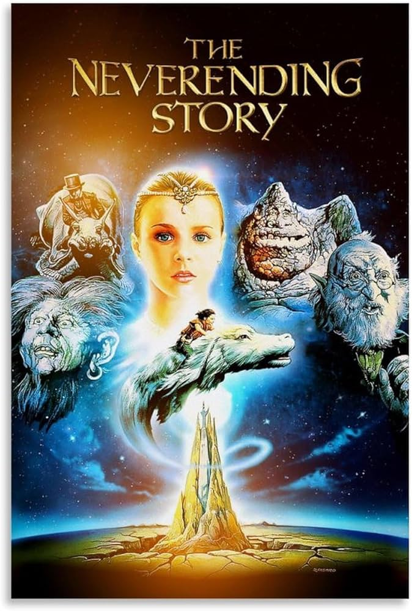
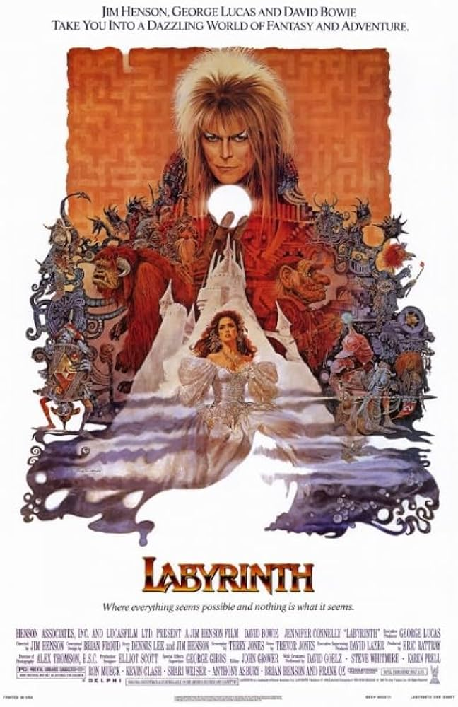
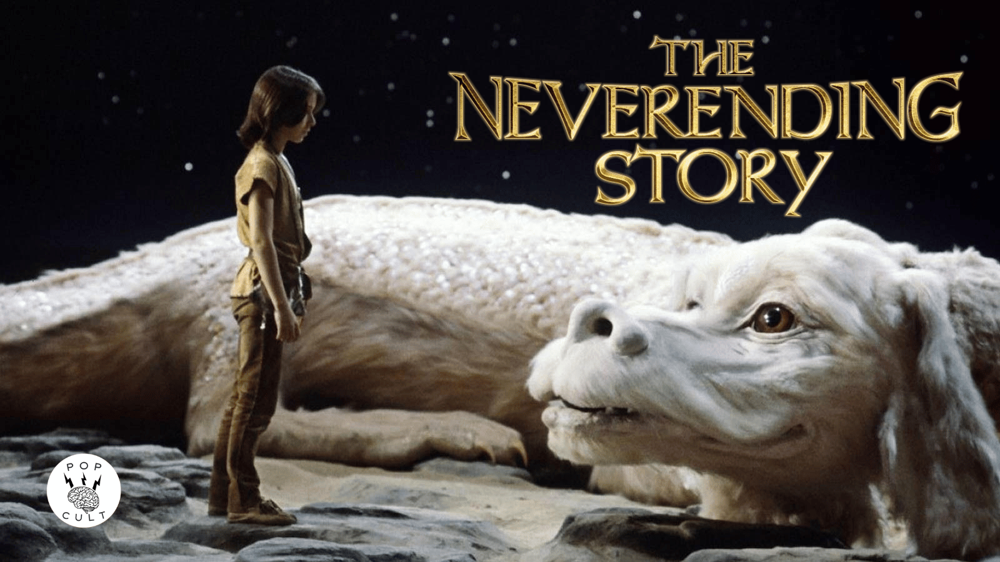

On his way to school, Bastian (Barret Oliver) ducks into a
bookstore to avoid bullies. Sneaking away with a book called
"The NeverEnding
Story" Bastian begins reading it in the school attic. The
novel is about Fantasia , a fantasy land threatened by
"The Nothing," a darkness
that destroys everything it touches. The kingdom needs the
help of a human child to survive. When Bastian reads a description
of himself in
the book, he begins to wonder if Fantasia is real and needs
him to survive.